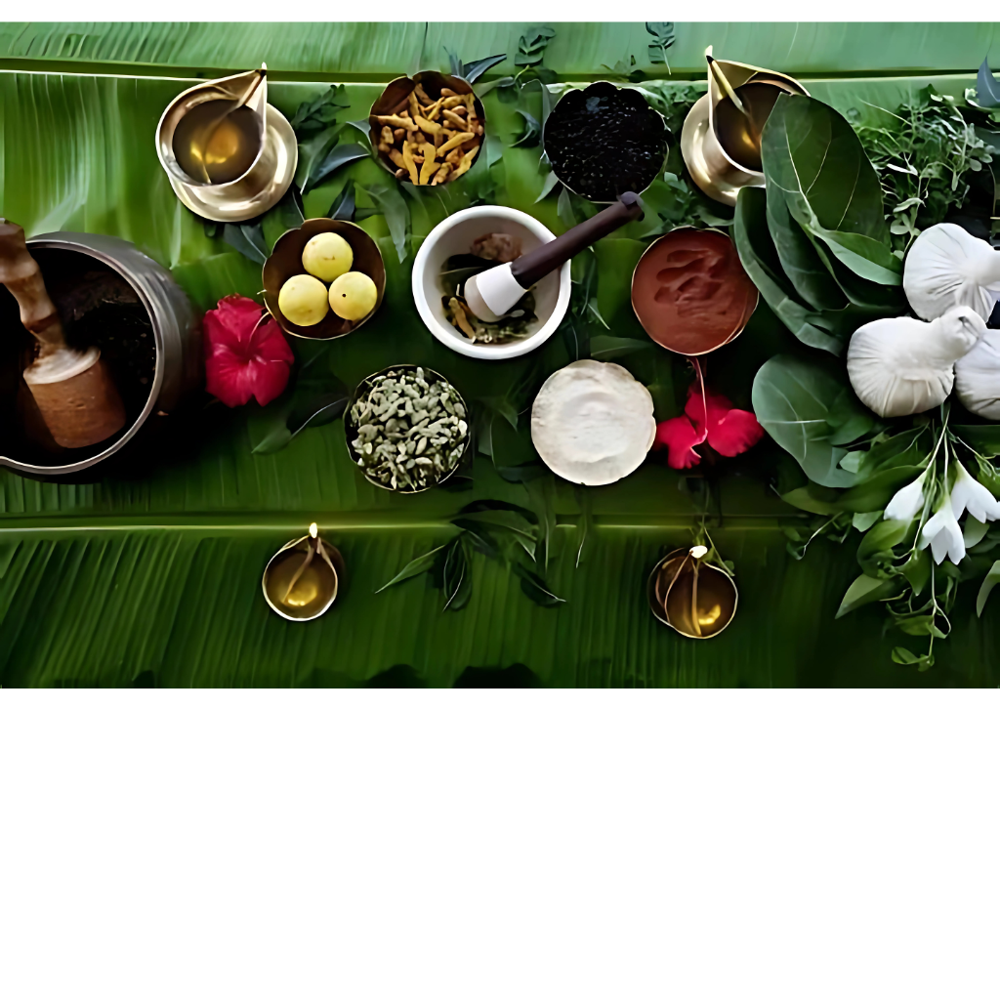

Siddha Medicine, an ancient system of healing and a vital part of AYUSH, has its origins in Tamil Nadu and is believed to be one of the world’s oldest medical traditions. Rooted in the wisdom of the Siddhars (spiritual saints), this system focuses on maintaining harmony between the body, mind, and soul. Siddha practices are deeply connected with nature and rely on the therapeutic use of herbs, minerals, and animal products prepared with precise methods. The image reflects Siddha’s holistic approach, showcasing natural ingredients such as turmeric, amla, cardamom, black pepper, medicinal leaves, and oils, all traditionally arranged on a banana leaf. Siddha medicine is particularly renowned for its strength in managing chronic illnesses, skin diseases, arthritis, and lifestyle disorders through long-lasting remedies. In addition to medicines, it emphasizes diet, yoga, meditation, and lifestyle regulation as essential components of healing. Unlike many modern practices, Siddha places strong emphasis on preventive care and rejuvenation, aiming not just for cure but for enhanced vitality and spiritual well-being. Even today, Siddha continues to thrive as a sustainable and natural healthcare system, offering holistic solutions that blend ancient knowledge with modern healthcare needs. .